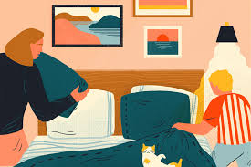

The easiest way to live without losing your sanity is to stop stressing over a clean apartment. In college, I’ve accepted that my apartment is not going to be 100% clean all the time. However, for my own sanity, I believe that a
cluttered living space = cluttered mind
That’s why I love to do my bed in the morning, and make sure everything is arranged before I go to sleep.
I never understand people who say that “cleaning gives me anxiety” because NOT cleaning gives me anxiety. At home, since my parents are older, we have a housekeeper that comes 1 time a month to deep clean our house. Of course, my mom tidy’s up the house a bit each day but for under the sofa or in the corner of the living room, it’s easier to ask a professional to clean it (at least for them).
Living with roommates who aren’t as clean as me makes me me doubt my own sanity. Of course, all I need is a roof over my head, eat well, and do things I loved like going to math camp, but is it too much to ask for people to clean up?!
As forge says,
“A Clean Home is an Investment in Your Sanity” and I 100% agree.